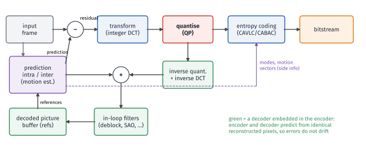
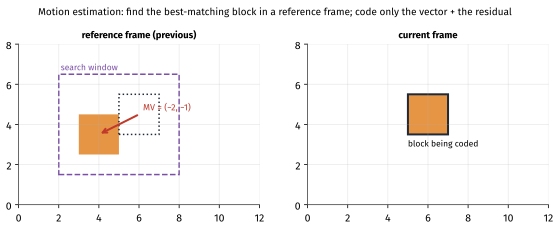
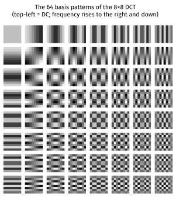
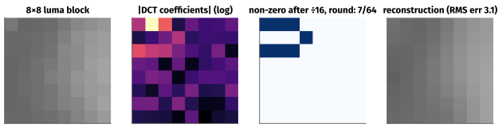
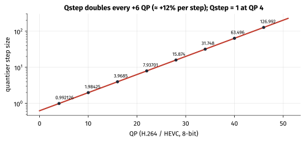
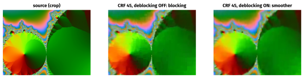
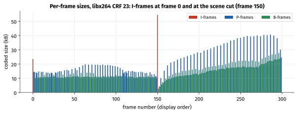
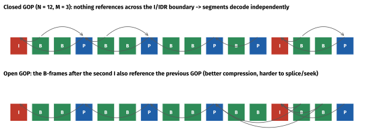
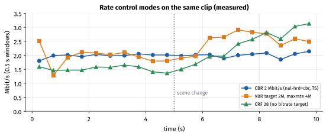
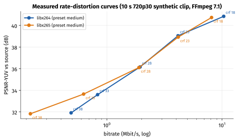

How to use this guide
This guide expands section 1.4 Compression Basics of the tutorial. Weeks 1–3 showed that raw media is enormous: 1.5 Mbit/s for stereo audio, 746 Mbit/s for 1080p30 video. This week explains how codecs shrink it 10× to 300× — and, just as importantly, which knobs you control and what they cost. Every number in the hands-on sections was measured with FFmpeg 7.1 (libx264/libx265) on a 10-second 1280 × 720, 30 fps test clip (5 s of FFmpeg's testsrc2 pattern followed by 5 s of a mandelbrot zoom, so there is a scene cut at frame 150). The CRF sweep and rate-control measurements used a variant with synthetic film-grain-like noise added (noise=alls=4:allf=t), which makes the content harder, like real camera footage. Your numbers will differ, but the trends should not.
| Session | Suggested activity | Time |
|---|---|---|
| 1 | Sections 1–2: redundancy, entropy, lossless coding. Exercise A. | 1.5 h |
| 2 | Sections 3–4: lossy coding, the hybrid codec model, transform and quantisation. Exercise B. | 2.5 h |
| 3 | Section 5: frame types and GOPs. Exercise C. | 1.5 h |
| 4 | Section 6: rate control. Exercises D and E. | 2 h |
| 5 | Section 7 and Exercise F on your phone; self-test. | 1.5 h |
Learning objectives.
- Name the four kinds of redundancy codecs exploit and compute the entropy of a simple source.
- Build a Huffman code by hand and explain why arithmetic coding (CABAC) does better.
- Explain the stages of a hybrid block-based video encoder and why it contains a decoder.
- Work through a DCT and quantisation example and explain why quantisation is the only lossy step.
- Relate QP to quantiser step size and bitrate.
- Explain I/P/B frames, IDR, open vs closed GOPs, and decode-order latency.
- Choose a rate-control mode for recording, streaming, real-time and offline use, and configure it in FFmpeg,
MediaCodecand VideoToolbox.
1. Why compression works: redundancy
Compression is possible because real signals are not random. Codecs exploit four kinds of redundancy:
| Kind | What it means | Example | Technique |
|---|---|---|---|
| Statistical | Some symbols are more likely than others | Most transform coefficients are zero | Entropy coding (Huffman, arithmetic) |
| Spatial | Neighbouring pixels/samples are similar | A blue sky | Intra prediction, transforms |
| Temporal | Consecutive frames are similar | A presenter in front of a still background | Inter prediction with motion compensation |
| Perceptual | Some detail cannot be seen or heard | High-frequency texture, sounds masked by louder sounds, colour detail | Quantisation, chroma subsampling, psychoacoustic models |
The first three can be exploited losslessly. The fourth is where lossy codecs get most of their gains — by throwing away what you will not miss.
2. Lossless compression and entropy
2.1 Information and entropy
Shannon defined the information of an event with probability p as −log2p bits: rare events carry more information. The entropy of a source is the average information per symbol:
H = − Σ pi · log2 pi bits per symbol
Entropy is the lower bound on the average number of bits per symbol for any lossless code (for symbols coded independently).
Worked example — entropy and a Huffman code
A source emits A, B, C, D with probabilities 0.5, 0.25, 0.125, 0.125.
H = 0.5·1 + 0.25·2 + 0.125·3 + 0.125·3 = 1.75 bits/symbol, versus 2 bits for a fixed-length code.
Huffman's algorithm: repeatedly merge the two least probable nodes. C+D → 0.25; (C+D)+B → 0.5; that + A → 1.0. Reading the branches gives codes A = 0, B = 10, C = 110, D = 111. Average length = 0.5·1 + 0.25·2 + 0.125·3 + 0.125·3 = 1.75 bits — exactly the entropy, because all probabilities are powers of ½. The code is prefix-free: no codeword is a prefix of another, so the bitstream can be decoded without separators.
Huffman codes must use a whole number of bits per symbol. When a symbol has probability 0.95 its ideal cost is −log20.95 ≈ 0.074 bits, but Huffman spends at least 1 bit. Arithmetic coding codes a whole sequence as one number in an interval, effectively spending fractional bits per symbol, and gets much closer to the entropy. Context modelling — choosing probabilities based on what was coded nearby — lowers the entropy further. H.264's CABAC (context-adaptive binary arithmetic coding) combines both and typically saves around 10–15% bitrate over its simpler CAVLC (variable-length) mode; HEVC uses CABAC only; AV1 uses a multi-symbol adaptive arithmetic coder.
2.2 Lossless techniques
- Run-length coding — "17 zeros" instead of seventeen zeros.
- Dictionary coding (LZ77/LZ78) — replace repeated strings with back-references. DEFLATE (zip, gzip, PNG) = LZ77 + Huffman.
- Prediction + residual coding — predict each sample from previous ones and code the small error. FLAC uses linear prediction with Rice codes; PNG applies a per-row prediction filter (Sub, Up, Average, Paeth) before DEFLATE.
Limits. No lossless compressor can shrink every input — there are fewer short files than long ones (the pigeonhole principle). Random data does not compress; it grows slightly (Exercise A). Typical lossless ratios are modest: about 1.5–3× for music (FLAC/ALAC), 2–4× for photographic images (PNG, lossless WebP), more for synthetic content.
3. Lossy compression
3.1 Rate–distortion
A lossy codec trades rate (bits) against distortion (difference from the original, measured objectively by e.g. PSNR, or perceptually). The best achievable trade-off is a rate–distortion (RD) curve: quality rises steeply with the first bits and then flattens. An encoder's job is to find, for every block, the coding choice that minimises D + λ·R — rate-distortion optimisation (RDO) — where λ sets the exchange rate between bits and quality (and is tied to the QP).
PSNR, the simplest metric: PSNR = 10·log10(255² / MSE) dB for 8-bit content. Rules of thumb for video: below ~30 dB looks clearly degraded, 35–40 dB is good, above ~45 dB is nearly indistinguishable. PSNR correlates only loosely with perception; you will use SSIM and VMAF in Phase 7.
3.2 Perceptual audio coding (in brief)
Audio codecs such as MP3, AAC and Opus exploit the ear's limits:
- Absolute threshold of hearing — very quiet sounds, especially at extreme frequencies, are inaudible.
- Frequency (simultaneous) masking — a loud tone hides quieter sounds at nearby frequencies.
- Temporal masking — a loud sound hides quieter sounds shortly before and after it.
The encoder transforms audio into frequency bands with the MDCT (a lapped cosine transform; AAC-LC uses 1024-coefficient frames, matching the 1024-sample frames from Week 1; MP3 frames are 1152 samples), runs a psychoacoustic model to estimate the masking threshold in each band, and quantises each band just finely enough that the quantisation noise stays below that threshold. HE-AAC adds spectral band replication (SBR), reconstructing high frequencies from a few bits of side information; Opus combines SILK (speech, linear prediction) and CELT (MDCT) layers with frames down to 2.5 ms for low latency.
4. The hybrid block-based video codec
H.264/AVC, H.265/HEVC, VP9, AV1 and H.266/VVC differ in hundreds of details but share one architecture, called hybrid because it combines prediction (temporal and spatial) with transform coding.

4.1 Partitioning
Each frame is divided into blocks, which are recursively split where detail demands it:
| Codec | Largest block | Smallest prediction blocks | Transform sizes |
|---|---|---|---|
| H.264 | 16×16 macroblock | 4×4 | 4×4, 8×8 (High profile) |
| HEVC | 64×64 coding tree unit (quad-tree of CUs) | 8×4 / 4×8 | 4×4 to 32×32 |
| VP9 | 64×64 superblock | 4×4 | 4×4 to 32×32 |
| AV1 | 128×128 superblock | 4×4, many rectangular shapes | 4×4 to 64×64, rectangular |
| VVC | 128×128 CTU (quad-tree + multi-type tree) | 4×4 | up to 64×64 |
Bigger blocks are efficient for flat areas and high resolutions (one set of side information covers more pixels); small blocks follow edges and motion boundaries. A large part of the gain from H.264 to HEVC to AV1/VVC comes from more flexible partitioning.
4.2 Prediction
Intra prediction predicts a block from already-decoded pixels of the same frame — the row above and the column to the left — by extending them in a direction or averaging them. H.264 offers 9 modes for 4×4 luma blocks (8 directions + DC); HEVC offers 35 (planar, DC and 33 angles); VVC 67; AV1 has 56 directional modes plus DC, smooth, Paeth and chroma-from-luma.
Inter prediction predicts a block from reference frames using a motion vector (MV): "this block looks like the block 2 pixels left and 1 up in the previous frame".

Finding motion vectors — motion estimation — is the most expensive part of encoding: the encoder compares candidate positions with a cost such as SAD (sum of absolute differences) plus an estimate of the bits for the vector. Motion vectors have sub-pixel precision (quarter-pixel in H.264/HEVC, finer in AV1/VVC), with interpolation filters generating the in-between pixels. MVs themselves are predicted from neighbouring blocks' vectors, so only the small difference is coded. Hardware encoders on phones use cheaper, fixed search strategies than slow software encoders — one reason a software encode at "slow" preset beats the phone's real-time encoder at the same bitrate.
4.3 Residual, transform and quantisation
The residual is the difference between the block and its prediction — mostly small numbers when prediction is good. It is transformed with a DCT-like integer transform. The DCT expresses a block as a weighted sum of fixed cosine patterns:

For natural images the energy concentrates in the few low-frequency coefficients (top-left). The transform is lossless (invertible) on its own; it just puts the information where quantisation can remove it cheaply.
Worked example — DCT and quantisation of a real block
An 8×8 luma block from the test clip (a smooth left-to-right gradient, values 102–164):
120 102 104 108 121 136 143 151
105 105 108 114 128 143 151 157
104 104 109 115 135 140 153 158
102 105 113 120 134 140 157 164
102 108 114 126 133 147 154 163
102 108 112 118 132 144 153 157
102 104 111 118 129 134 149 162
104 104 108 111 119 132 142 154
After subtracting 128 and applying the orthonormal 2-D DCT, the first row of coefficients is −11, −154, 27, 1, 4, −2, 2, 4: the large −154 is the horizontal "half-cosine" pattern — i.e. the gradient. The top-left 2×2 coefficients hold 92% of the block's energy.
Dividing every coefficient by a step of 16 and rounding leaves only 7 non-zero values out of 64:
-1 -10 2 0 0 0 0 0
0 0 0 1 0 0 0 0
-1 1 1 0 0 0 0 0
0 0 0 0 0 0 0 0 (remaining rows all zero)
In zig-zag order the sequence is −1, −10, 0, −1, 0, 2, 0, 0, 1, 0, 0, 0, 1, 1, then 50 zeros — which run-length plus entropy coding turns into a handful of bits plus an "end of block". Reconstructing (multiply by 16, inverse DCT) gives a block with an RMS error of 3.1 grey levels (maximum 8.8). That rounding is the only place information was lost.

Quantisation divides each coefficient by a step size and rounds; it is the main lossy step, and the QP (quantisation parameter) sets the step. In H.264 and HEVC (8-bit), QP runs 0–51 and the step size doubles every 6 QP (≈ 12% per step); QP 4 corresponds to a step of 1.0. AV1 uses a different scale (q-index 0–255). Encoders also use larger effective steps for high frequencies (via scaling matrices or psycho-visual tuning) and adaptive quantisation, spending more bits on flat areas where artefacts are most visible.

4.4 Entropy coding and in-loop filtering
The quantised coefficients, prediction modes, block sizes and motion vectors are entropy coded (CAVLC/CABAC in H.264, CABAC in HEVC, adaptive multi-symbol arithmetic coding in AV1).
Coarse quantisation of separate blocks causes blocking (visible block edges). In-loop filters run on the reconstructed frame before it is stored as a reference: the deblocking filter (H.264 onwards) smooths block edges where the discontinuity looks like an artefact rather than a real edge; HEVC adds SAO (sample adaptive offset); AV1 adds CDEF (constrained directional enhancement) and loop restoration; VVC adds ALF (adaptive loop filter). Because they are in the loop, the improved frames also improve future predictions.

4.5 Why the encoder contains a decoder
The decoder never sees the original frames — only the reconstructed ones. If the encoder predicted from originals, the decoder would predict from slightly different pixels and the errors would accumulate frame after frame (drift). So the encoder reconstructs each frame exactly as the decoder will (inverse quantisation, inverse transform, adding the prediction, in-loop filters) and predicts only from those. This is also why the decoder's behaviour is precisely specified by the standards, while encoders are free to make any choices — the standard defines the bitstream and decoding, not the encoder.
4.6 Common artefacts
| Artefact | Looks like | Main cause |
|---|---|---|
| Blocking | Visible grid of squares | Coarse quantisation; weak/disabled deblocking |
| Blurring | Loss of fine texture | Discarded high frequencies; strong filtering |
| Ringing / mosquito noise | Halos and shimmering around sharp edges and text | Quantised high-frequency coefficients near edges |
| Banding | Steps in smooth gradients | Coarse quantisation of flat areas; 8-bit precision |
| Pumping / breathing | Quality pulses at each I-frame | Large quality difference between I-frames and the frames between them |
| Smearing / "dirty window" | Texture stuck while the scene moves | Skipped blocks copying stale reference content at low bitrate |
5. Frame types and GOP structure
5.1 I, P and B frames
- I-frame (intra): uses only intra prediction. Self-contained, largest, and a possible random-access point.
- IDR frame: an I-frame that also clears the reference buffer: no later frame may reference anything before it. A guaranteed clean start for decoding, seeking and stream switching.
- P-frame (predicted): may use inter prediction from earlier (in decode order) frames.
- B-frame (bi-predicted): may predict from two references, typically one earlier and one later in display order, and average them. B-frames compress best but force decode order ≠ display order (Week 3) and add latency. In H.264/HEVC, B-frames can themselves be references (hierarchical B / B-pyramid).
Measured on the test clip (libx264, CRF 23, default settings), average coded sizes were I ≈ 39 kB, P ≈ 22 kB, B ≈ 14 kB. With synthetic "sensor noise" added to the same clip the B-frame advantage shrank (I 42, P 24, B 14.5 kB, and the file grew) — random noise cannot be predicted, so noisy low-light footage costs far more bits than clean footage.

5.2 GOP structure
A GOP (group of pictures) is the run of frames from one I-frame to the next. It is described by N (GOP length: distance between I-frames) and M (distance between anchor I/P frames, i.e. number of consecutive B-frames + 1). "N = 60, M = 3" at 30 fps is an I-frame every 2 s in the pattern I B B P B B P …
- Closed GOP: no frame references across the GOP boundary. Every GOP decodes independently — required for clean segment boundaries in HLS/DASH and convenient for editing.
- Open GOP: B-frames just after an I-frame may also reference the previous GOP. Slightly more efficient, but those frames cannot be decoded when you start at that I-frame (HEVC formalises this with CRA pictures and skippable leading pictures).

Choosing a GOP length is a trade-off: longer GOPs mean fewer expensive I-frames (better compression) but slower seeking, slower channel switching, and longer error propagation after packet loss. Typical choices:
| Use | Typical keyframe interval |
|---|---|
| Phone camera recording | about 1 s (often configured with KEY_I_FRAME_INTERVAL = 1) |
| HLS/DASH streaming | 2 s, fixed and aligned across all renditions (Apple's HLS Authoring Specification recommends key frames every 2 s) |
| Video calls (RTC) | very long or "infinite"; new keyframes only on request after loss (PLI/FIR) |
| Offline/archival | up to ~10 s (x264 default keyint = 250 frames) with scene-cut detection |
Encoders also insert I-frames at scene cuts, where prediction from the previous frame is useless. For streaming you usually disable that (-sc_threshold 0) or force fixed positions so segments stay aligned. On the test clip, -g 60 -keyint_min 60 -sc_threshold 0 produced I-frames exactly at frames 0, 60, 120, 180 and 240 and a file about 2% larger than x264's default (I-frames only at 0 and the scene cut at 150). Encoding every frame as intra (-g 1) at the same CRF made it 2.4× larger — the value of temporal prediction, measured.
6. Rate control
6.1 The modes
Rate control decides the QP of every frame (and block) to meet a goal:
| Mode | Goal | Behaviour | Typical use |
|---|---|---|---|
| CBR | Constant bitrate | Bits per second held nearly flat (padding if needed); quality varies with content | Live broadcast, fixed-capacity links, video calls |
| VBR | Average bitrate, with a peak cap | Spends more bits on complex scenes, fewer on simple ones | Phone camera recording, VOD streaming renditions |
| CRF / CQ | Constant (perceptual) quality | Bitrate varies freely with content; no size guarantee | Offline encoding, archives, x264/x265 -crf |
| CQP | Fixed QP per frame type | Simplest; no adaptation | Testing, research, codec comparisons at "equal QP" |
| 2-pass ABR | Exact average size, best distribution | First pass analyses, second pass allocates | VOD where file size must be hit exactly |
VBV / HRD. Streaming adds a decoder-buffer model — the video buffering verifier (H.264's HRD). -maxrate and -bufsize in FFmpeg say: "the bitstream must be playable by a decoder receiving at most maxrate bits/s with a buffer of bufsize bits". A small buffer (e.g. 1 s or less) forces near-constant bits; a large one allows bigger swings. Apple's HLS spec and every CDN/ABR player care about the peak, not just the average.

6.2 CRF and the RD curve, measured
x264 and x265 use CRF (constant rate factor, 0–51, defaults 23 for x264 and 28 for x265; lower = higher quality). The FFmpeg H.264 guide's rule of thumb is that ±6 CRF roughly halves or doubles the bitrate. On the test clip (grain variant):
| CRF | x264 bitrate | x264 PSNR | x265 bitrate | x265 PSNR |
|---|---|---|---|---|
| 18 | 10.34 Mbit/s | 40.84 dB | 8.11 Mbit/s | 40.73 dB |
| 23 | 4.14 Mbit/s | 39.04 dB | 4.16 Mbit/s | 38.92 dB |
| 28 | 1.94 Mbit/s | 36.15 dB | 1.90 Mbit/s | 36.10 dB |
| 33 | 0.83 Mbit/s | 33.59 dB | 0.63 Mbit/s | 33.65 dB |
| 38 | 0.49 Mbit/s | 31.91 dB | 0.22 Mbit/s | 31.82 dB |

Two lessons. First, on this clip each +5 CRF cut the bitrate by roughly 2–2.5× — the rule of thumb is approximate and content-dependent. Second, equal CRF does not mean equal quality across encoders: x264 and x265 CRF scales are different, so compare codecs on RD curves (bitrate vs quality), never at "the same setting". This is the tutorial's pitfall "comparing codecs at different settings", made concrete.
6.3 Bits per pixel
Bits per pixel (bpp) = bitrate ÷ (width × height × fps) normalises bitrate across formats:
| Encode | bpp |
|---|---|
| 1080p30 H.264 at 8 Mbit/s | 8 × 10⁶ / (1920 × 1080 × 30) = 0.129 |
| 720p30 H.264 at 3 Mbit/s | 3 × 10⁶ / (1280 × 720 × 30) = 0.109 |
| 4K60 HEVC at 50 Mbit/s | 50 × 10⁶ / (3840 × 2160 × 60) = 0.100 |
| 1080p30 phone recording at 16 Mbit/s | 0.257 |
The tutorial's guide of roughly 0.05–0.1 bpp for good-quality H.264 streaming applies to typical content; complex or noisy content needs more, and higher resolutions usually need fewer bpp because detail is spread over more pixels. HEVC and AV1 reach similar quality at lower bpp.
6.4 Rate control on Android and iOS
Android MediaCodec (hardware encoders) exposes rate control through MediaFormat:
val format = MediaFormat.createVideoFormat(MediaFormat.MIMETYPE_VIDEO_AVC, 1280, 720).apply {
setInteger(MediaFormat.KEY_COLOR_FORMAT, MediaCodecInfo.CodecCapabilities.COLOR_FormatSurface)
setInteger(MediaFormat.KEY_BIT_RATE, 4_000_000) // bits per second
setInteger(MediaFormat.KEY_FRAME_RATE, 30)
setInteger(MediaFormat.KEY_I_FRAME_INTERVAL, 2) // seconds between sync frames
setInteger(MediaFormat.KEY_BITRATE_MODE,
MediaCodecInfo.EncoderCapabilities.BITRATE_MODE_VBR) // or _CBR, _CQ, _CBR_FD (API 31+)
setInteger(MediaFormat.KEY_PROFILE, MediaCodecInfo.CodecProfileLevel.AVCProfileHigh)
setInteger(MediaFormat.KEY_LEVEL, MediaCodecInfo.CodecProfileLevel.AVCLevel31)
}
val encoder = MediaCodec.createEncoderByType(MediaFormat.MIMETYPE_VIDEO_AVC)
encoder.configure(format, null, null, MediaCodec.CONFIGURE_FLAG_ENCODE)
Support varies per device and codec: check EncoderCapabilities.isBitrateModeSupported() before relying on CQ or CBR, and VideoCapabilities.getBitrateRange() for limits. Other useful keys: KEY_MAX_B_FRAMES (API 29), KEY_QUALITY for CQ mode, KEY_PREPEND_HEADER_TO_SYNC_FRAMES, and MediaCodec.PARAMETER_KEY_REQUEST_SYNC_FRAME / PARAMETER_KEY_VIDEO_BITRATE via setParameters() to request a keyframe or change bitrate on the fly (essential for RTC). Media3 Transformer wraps all this for file-to-file transcoding.
Apple VideoToolbox (VTCompressionSession) uses properties such as kVTCompressionPropertyKey_AverageBitRate, kVTCompressionPropertyKey_DataRateLimits (peak bytes per period), kVTCompressionPropertyKey_MaxKeyFrameInterval / MaxKeyFrameIntervalDuration, kVTCompressionPropertyKey_AllowFrameReordering (B-frames on/off), kVTCompressionPropertyKey_Quality and kVTCompressionPropertyKey_RealTime. With AVAssetWriter, the equivalent dictionary keys are AVVideoAverageBitRateKey, AVVideoMaxKeyFrameIntervalKey and AVVideoAllowFrameReorderingKey inside AVVideoCompressionPropertiesKey.
| Use case | Mode | GOP | B-frames | Notes |
|---|---|---|---|---|
| Camera recording | VBR | ~1 s | often none in hardware | Bitrate scaled with resolution and fps |
| Live streaming upload | CBR or capped VBR | 2 s, fixed | optional | Small VBV buffer; aligned keyframes |
| Video call | CBR (often CBR_FD) |
long; keyframes on request | none | Bitrate changed live from congestion control |
| Offline transcode / archive | CRF (software) | long + scene cuts | yes | Slow presets give the best RD |
7. Hands-on exercises
Exercise A — Entropy and the limits of lossless compression
head -c 1000000 /dev/urandom > rand.bin
head -c 1000000 /dev/zero > zero.bin
gzip -9 -k rand.bin zero.bin
ls -l rand.bin.gz zero.bin.gz
# Lossless audio on a pure tone vs. noise (re-use tone.wav from Week 1)
ffmpeg -f lavfi -i "aevalsrc=0.5*sin(2*PI*1000*t):c=stereo:s=48000:d=10" -c:a pcm_s16le tone.wav
ffmpeg -f lavfi -i "anoisesrc=d=10:c=white:r=48000:a=0.5" -ac 2 -c:a pcm_s16le noise.wav
ffmpeg -i tone.wav tone.flac; ffmpeg -i noise.wav noise.flac
ls -l tone.wav tone.flac noise.wav noise.flac
Expected (measured): rand.bin.gz is 1 000 182 bytes — larger than the input, because random data has 8 bits of entropy per byte and gzip adds headers. zero.bin.gz is about 1 kB (1012 bytes). The 1.92 MB tone compresses with FLAC to about 218 kB (8.8:1, because a sine is perfectly predictable); white noise barely compresses (real music typically lands at 1.5–2:1). Then compute the byte entropy of a few files:
import collections, math, sys
data = open(sys.argv[1], "rb").read()
counts = collections.Counter(data)
H = -sum(c / len(data) * math.log2(c / len(data)) for c in counts.values())
print(f"{sys.argv[1]}: {H:.3f} bits/byte -> order-0 bound {H / 8:.1%} of original size")
Run it on rand.bin (≈ 8.000), zero.bin (0.000), a WAV, a JPEG and an MP4. Compressed files (JPEG, MP4) are already near 8 bits/byte — which is why zipping them gains nothing.
Exercise B — Quantisation by hand
Using the 8×8 block and the coefficient row in section 4.3:
- Quantise the first row of coefficients (−11, −154, 27, 1, 4, −2, 2, 4) with step 16, then with step 40. How many non-zero values remain in each case?
- A QP of 28 corresponds to a step of about 16 in H.264 (0.625 × 228/6 ≈ 15.9). What step does QP 34 correspond to? QP 22?
- If raising QP by 6 roughly halves the bitrate, estimate the bitrate at QP 34 of an encode that is 4 Mbit/s at QP 28.
(Answers: self-test questions 15–17.)
Exercise C — See the GOP
Create a clip with a scene cut (or use any phone recording):
ffmpeg -f lavfi -i "testsrc2=size=1280x720:rate=30:duration=5" -f lavfi -i "mandelbrot=size=1280x720:rate=30" \
-filter_complex "[0:v]format=yuv420p[a];[1:v]trim=duration=5,setpts=PTS-STARTPTS,format=yuv420p[b];[a][b]concat=n=2:v=1:a=0,fps=30[v]" \
-map "[v]" -c:v libx264 -qp 0 -preset ultrafast src.mp4
ffmpeg -i src.mp4 -c:v libx264 -preset medium -crf 23 default.mp4
ffmpeg -i src.mp4 -c:v libx264 -preset medium -crf 23 -g 60 -keyint_min 60 -sc_threshold 0 gop60.mp4
ffmpeg -i src.mp4 -c:v libx264 -preset medium -crf 23 -g 1 intra.mp4
for f in default gop60 intra; do
echo "$f: $(stat -c %s $f.mp4) bytes, I-frames at:" \
$(ffprobe -v error -select_streams v:0 -show_entries frame=key_frame -of csv=p=0 $f.mp4 | awk -F, '$1==1{printf "%d ", NR-1}' | cut -c1-60)
done
ffprobe -v error -select_streams v:0 -show_entries frame=pict_type,pkt_size -of csv=p=0 default.mp4 \
| awk -F, '{s[$2]+=$1; n[$2]++} END {for (t in s) printf "%s: %d frames, avg %.0f bytes\n", t, n[t], s[t]/n[t]}'
(macOS: replace stat -c %s with stat -f %z.)
Expected pattern: default.mp4 has I-frames at 0 and at the scene cut (150); gop60.mp4 at 0, 60, 120, 180, 240 and is a few per cent larger; intra.mp4 has every frame as I and is more than twice as large. The per-type averages show I > P > B. (-qp 0 makes src.mp4 a lossless intermediate — it is large, about 50 MB.) Measured: default.mp4 5 015 403 bytes with I-frames at 0 150; gop60.mp4 5 131 729 bytes; intra.mp4 12 100 611 bytes; per-type averages I 39 012, P 21 751, B 14 046 bytes.
Exercise D — CRF sweep and your first RD curve
for crf in 18 23 28 33 38; do
ffmpeg -loglevel error -y -i src.mp4 -c:v libx264 -preset medium -crf $crf x264_$crf.mp4
br=$(ffprobe -v error -select_streams v:0 -show_entries stream=bit_rate -of csv=p=0 x264_$crf.mp4)
psnr=$(ffmpeg -i x264_$crf.mp4 -i src.mp4 -lavfi psnr -f null - 2>&1 | grep -o "average:[0-9.]*")
echo "crf=$crf bitrate=$br $psnr"
done
Repeat with -c:v libx265 -x265-params log-level=error and plot bitrate (log x-axis) against PSNR for both. Expected: a monotonic curve per encoder; roughly a 2× bitrate change per 5–6 CRF; x265 below/left of x264 at low bitrates. Then try -preset ultrafast vs -preset slow at the same CRF and record size, PSNR and encode time — presets trade CPU for compression, which is exactly the trade-off a phone's real-time hardware encoder makes.
Exercise E — Rate-control modes
# CBR with HRD signalling (TS output keeps filler data)
ffmpeg -i src.mp4 -c:v libx264 -b:v 2M -minrate 2M -maxrate 2M -bufsize 1M -x264-params nal-hrd=cbr -f mpegts cbr.ts
# Capped VBR
ffmpeg -i src.mp4 -c:v libx264 -b:v 2M -maxrate 4M -bufsize 4M vbr.mp4
# Bitrate per second for each file
for f in cbr.ts vbr.mp4 x264_28.mp4; do
echo "$f:"; ffprobe -v error -select_streams v:0 -show_entries packet=pts_time,size -of csv=p=0 $f \
| sort -t, -k1 -g | awk -F, 'NR==1{t0=$1} {b[int($1-t0)]+=$2*8} END{for(i=0;i<10;i++) printf "%.2f ", b[i]/1e6; print "Mbit/s"}'
done
Expected (measured): CBR stays at about 2.0 Mbit/s every second; VBR averages about 2.2 Mbit/s but rises to about 2.6–2.9 Mbit/s in the complex second half; CRF 28 ranges from about 1.4 to 3.1 Mbit/s. Same encoder, same clip, three very different bitrate shapes.
Exercise F — Your phone's encoders
List the encoders on your phone and what rate-control modes they support:
val codecs = MediaCodecList(MediaCodecList.REGULAR_CODECS).codecInfos
for (info in codecs.filter { it.isEncoder }) {
for (type in info.supportedTypes.filter { it.startsWith("video/") }) {
val caps = info.getCapabilitiesForType(type)
val enc = caps.encoderCapabilities
val modes = mapOf(
"CQ" to MediaCodecInfo.EncoderCapabilities.BITRATE_MODE_CQ,
"VBR" to MediaCodecInfo.EncoderCapabilities.BITRATE_MODE_VBR,
"CBR" to MediaCodecInfo.EncoderCapabilities.BITRATE_MODE_CBR,
).filterValues { enc.isBitrateModeSupported(it) }.keys
val hw = if (Build.VERSION.SDK_INT >= 29) info.isHardwareAccelerated else null
Log.i("Encoders", "${info.name} $type hw=$hw modes=$modes " +
"bitrates=${caps.videoCapabilities.bitrateRange}")
}
}
Expected: hardware encoders with vendor names (e.g. c2.qti.avc.encoder, c2.exynos.h264.encoder, c2.mtk.avc.encoder — names depend on the SoC) alongside Google's software encoders (c2.android.avc.encoder, c2.android.hevc.encoder, …). VBR is almost always supported; CBR usually; CQ less often. Then pull a camera recording and run the pict_type command from Exercise C on it: note the keyframe interval and whether there are any B-frames.
8. Common pitfalls
- Comparing codecs or encoders at "the same CRF/QP" — scales differ; compare RD curves at matched quality.
- Comparing at different presets, resolutions or source clips — invalid conclusions.
- Re-encoding repeatedly — every lossy generation adds artefacts; remux when you only need a new container.
- Using CRF for live streaming — unbounded peaks break players and networks; use CBR or capped VBR with a VBV buffer.
- Unaligned or scene-cut keyframes in ABR ladders — segments cannot start cleanly and renditions cannot switch.
- Too-long GOPs for seeking/scrubbing UIs — seeking has to decode from the previous keyframe; use shorter GOPs or an intra-only proxy.
- Enabling B-frames for real-time video — adds reorder latency.
- Starving noisy (low-light) content of bits — noise is incompressible and turns into smeared blocks; denoise before encoding, or budget more bits.
- Assuming a requested bitrate mode is honoured on Android — check
isBitrateModeSupported(); some encoders silently fall back. - Forgetting that bitrate is the main quality knob — resolution and frame rate only matter relative to it (bpp).
9. Self-test
- Name the four kinds of redundancy that codecs exploit. Which ones can lossless codecs use?
- What is the entropy of a source with symbol probabilities 0.5, 0.25, 0.25? Give a Huffman code for it.
- Why can't any lossless compressor shrink every file? What happens when you gzip random data?
- Why does arithmetic coding (CABAC) beat Huffman coding on highly skewed probabilities?
- List the main stages of a hybrid video encoder in order.
- Why does an encoder contain a decoder?
- What is the difference between intra and inter prediction? What is a motion vector?
- Why is the DCT useful if it is lossless on its own?
- Which step is the main source of loss? What does QP control, and how does step size change per +6 QP?
- What do in-loop filters do, and why are they "in the loop"?
- What is the difference between an I-frame and an IDR frame? Between open and closed GOPs?
- Why do B-frames add latency? Why do video-call encoders avoid them?
- A 2-second GOP at 30 fps: how many frames between I-frames? At 25 fps?
- Match each use case to a rate-control mode: live streaming, offline archive, video call, camera recording.
- Quantise (−11, −154, 27, 1, 4, −2, 2, 4) with step 16 and with step 40. How many non-zero values remain?
- What quantiser step do QP 22 and QP 34 correspond to in H.264?
- An encode is 4 Mbit/s at QP 28. Estimate the bitrate at QP 34.
- Compute the bits per pixel of 1080p60 at 12 Mbit/s and of 720p30 at 1.5 Mbit/s.
- Two encoders at CRF 28 produce 1.9 Mbit/s and 1.94 Mbit/s with nearly equal PSNR; at CRF 38 one produces 0.22 Mbit/s and the other 0.49 Mbit/s at similar PSNR. What can you conclude, and what can't you?
- Why does noisy low-light video need more bits than clean video for the same quality?
10. Further reading
- Iain E. Richardson, The H.264 Advanced Video Compression Standard (2nd ed., Wiley) — the clearest book-length explanation of the hybrid model, prediction, transforms and rate control.
- Vivienne Sze, Madhukar Budagavi, Gary J. Sullivan (eds.), High Efficiency Video Coding (HEVC): Algorithms and Architectures (Springer) — written by the standard's designers.
- T. Wiegand, G. J. Sullivan, G. Bjøntegaard, A. Luthra, "Overview of the H.264/AVC video coding standard", IEEE Transactions on Circuits and Systems for Video Technology, 2003.
- G. J. Sullivan, J.-R. Ohm, W.-J. Han, T. Wiegand, "Overview of the High Efficiency Video Coding (HEVC) Standard", IEEE TCSVT, 2012.
- J. Han et al., "A Technical Overview of AV1", Proceedings of the IEEE, 2021.
- G. K. Wallace, "The JPEG still picture compression standard", IEEE Transactions on Consumer Electronics, 1992 — the classic, readable introduction to DCT image coding.
- C. E. Shannon, "A Mathematical Theory of Communication", Bell System Technical Journal, 1948 — where entropy comes from.
- FFmpeg wiki: "H.264 Video Encoding Guide" and "H.265/HEVC Video Encoding Guide" (trac.ffmpeg.org/wiki) — CRF, presets, two-pass, VBV.
- Apple, "HLS Authoring Specification for Apple Devices" (developer.apple.com/streaming) — keyframe, bitrate and ladder recommendations.
- Android Developers:
MediaCodec,MediaFormatandMediaCodecInfo.EncoderCapabilitiesreference pages; Media3 Transformer guide. - Leandro Moreira, digital_video_introduction (github.com/leandromoreira/digital_video_introduction) — a hands-on walk through exactly these concepts with FFmpeg.
Answer key
- Statistical, spatial, temporal, perceptual. Lossless codecs can exploit statistical, spatial and temporal redundancy (through prediction and entropy coding); only lossy codecs discard perceptually irrelevant information.
- H = 0.5·1 + 0.25·2 + 0.25·2 = 1.5 bits/symbol. Huffman: A = 0, B = 10, C = 11 (average 1.5 bits).
- There are 2n files of n bits but fewer than 2n shorter files, so some inputs must map to equal or longer outputs (pigeonhole principle). Random data has no redundancy: gzip output is slightly larger (1 000 182 bytes for 1 000 000 random bytes).
- Huffman spends at least one whole bit per symbol even when a symbol's information content is far less (e.g. 0.07 bits at p = 0.95). Arithmetic coding spends fractional bits, and context adaptation keeps probabilities accurate.
- Partition into blocks → predict (intra or inter) → compute residual → transform → quantise → entropy code; in the loop: inverse quantise/transform, add prediction, in-loop filters, store as reference.
- So it predicts from exactly the reconstructed pixels the decoder will have; predicting from originals would make encoder and decoder diverge (drift).
- Intra predicts from neighbouring decoded pixels in the same frame; inter predicts from other (reference) frames. A motion vector is the displacement (with sub-pixel precision) from the current block to its matching block in a reference frame.
- It compacts the energy of natural image blocks into a few low-frequency coefficients, so quantisation can zero most coefficients with little visible loss and entropy coding can then code the zeros cheaply.
- Quantisation. QP sets the quantiser step size (coarseness); in H.264/HEVC the step doubles every +6 QP.
- They reduce artefacts (blocking, ringing) in reconstructed frames. Being in the loop, the filtered frames are what get stored as references, so the improvement also benefits every frame predicted from them (and encoder and decoder stay in sync).
- An I-frame uses only intra prediction; an IDR also clears the reference buffers so nothing after it can reference anything before it. In a closed GOP no frame references across the GOP boundary; an open GOP allows frames after an I-frame (in decode order) to reference the previous GOP.
- A B-frame needs a later frame decoded first, so the encoder must wait for future frames and the decoder must reorder — adding at least one frame of delay per level of reordering. Calls need minimum latency.
- 60 frames at 30 fps; 50 frames at 25 fps.
- Live streaming → CBR or capped VBR (with VBV); offline archive → CRF (or 2-pass); video call → CBR with on-demand keyframes and live bitrate changes; camera recording → VBR.
- Step 16: −0.69, −9.6, 1.7, 0.06, 0.25, −0.13, 0.13, 0.25 → −1, −10, 2, 0, 0, 0, 0, 0 → 3 non-zero. Step 40: −0.28, −3.85, 0.68, … → 0, −4, 1, 0, 0, 0, 0, 0 → 2 non-zero.
- QP 22: 0.625 × 222/6 ≈ 8.0. QP 34: 0.625 × 234/6 ≈ 32.0.
- Roughly 2 Mbit/s (half), with the caveat that the exact factor is content-dependent.
- 12 × 10⁶ / (1920 × 1080 × 60) = 0.096 bpp; 1.5 × 10⁶ / (1280 × 720 × 30) = 0.054 bpp.
- At CRF 28 the two give nearly equal size and quality on this clip; at CRF 38 x265 matched x264's PSNR with less than half the bits, suggesting x265 is more efficient at low bitrates on this clip, by PSNR. You cannot conclude anything general from one clip, one metric and one preset, and you cannot compare by CRF value — compare RD curves (ideally with BD-rate, Phase 7) over many clips.
- Noise is random, so it is neither spatially nor temporally predictable: residuals stay large, many high-frequency coefficients survive quantisation, and B/P frames lose most of their advantage. Either the bitrate rises or the encoder smears the noise (and the detail under it) away.